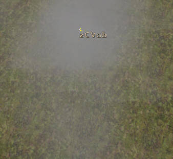

| Visual Bezeichnung | Bild | Beschreibung |
|---|---|---|
FIRE.pfx |
 |
normales Feuer |
FIRE_MEDIUM.pfx |
 |
Fackelfeuer (kleiner als "fire.pfx") |
TORCH.pfx |
 |
Fackelflamme (wird wie "FIRE_MEDIUM.pfx" benutzt) |
FIRE_HOT.pfx |
 |
Lagerfeuer (intensiver als "FIRE.pfx") |
FIRE_SMOKE.pfx |
 |
Feuerrauch (für Flammen oder Lagerfeuer) |
FIRE_SPARKS.pfx |
Feuerfunken - Kein Bild, da es zu undeutlich geworden wäre. |
Funken für ein "Fire_Medium.pfx" Controller |
DRAGONLOCATION_FIRE.pfx |
Feuer |
|
FLAMETHROWER.pfx |
Flammenstoß der nur in eine Richtung "flambiert". |
|
GROUNDFOG1_OUTDOOR_HIGH.pfx |
 |
großer Außennebel |
GROUNDFOG1_OUTDOOR_MID.pfx |
.jpg) |
kleiner Außennebel |
GROUNDFOG1_INDOOR_HIGH.pfx |
 |
großer Innennebel |
GROUNDFOG1_INDOOR_MID.pfx |
 |
kleiner Innennebel |
SOAPFOAM.pfx |
Seifenschaum |
|
CAULDRON_BUBBLES.pfx |
 |
Blubberblasen für Kesselwasser |
GLOWWORMS_SMALL.pfx |
 |
Grüne Glühwürmchen (für Höhlen) |
RESURRECTION.pfx |
 |
Halb transparente Teleporterleuchtkugel oberhalb des Teleportersteines |
MFX_BERZERK_INIT.pfx |
 |
kleine rote Partikelkugel |
THEREDEYE.pfx |
 |
kleines rotes Auge |
STARGATE_WHITEGLOW.pfx |
 |
weißes Protallicht |
MFX_CHARM_INIT.pfx |
 |
blaue Partikelkugel |
LIGHTCONE.pfx |
 |
hellblauer Leuchtstrahl (Drachenschneide) |
LIGHTCONE_PARTICLES.pfx |
kleine feine Lichtpartikelchen (zur Ligthcone) |
|
WOOD_LIGHT_PARTICLES2.pfx |
 |
hellgrüne Lichtstrahlen, welche durch Blätterdächer hindurchstrahlen |
LIGHTSMOKE.pfx |
 |
Rauch über den Schmiedeplätzen |
COALGLOW.pfx |
 |
Feuer unter Kochtöpfen |
FLIES.pfx |
Fliegen - Kein Bild, da es zu undeutlich geworden wäre. |
kleine Fliegen die meist über Kadavern fliegen |
TREASURE_GLOW.pfx |
 |
gelber Glietzerstaub (meist auf Drachenschätzen zu finden) |
TREASURE_GLOW_CHILD.pfx |
 |
kleine hellweiße Glühfünkchen Werden auch bei den Erzkisten im Minental verwendet |
WATERFX.pfx |
 |
Wasserbläschen (sind oft im Meer vorhanden) |
WATERVAPOUR.pfx |
 |
Gysirdampf |
LAVAFOG_BIG.pfx |
 |
Lavadampf (auf dem Vulkan zu finden) |
MFX_TEST1.pfx |
Blitzeffekt |
|
MFX_SUCKENERGY_CAST.pfx |
kleine undurchsichtige Blutkugel |
|
TEST3.pfx |
 |
große rote Lichtkugel |
MFX_SHRINK_INIT.pfx |
 |
grüne Lichtkugel |
MFX_ENERGYBALL_CAST.pfx |
große rote pulsierende Energiekugel |
|
MFX_ENERGYBALL_INIT.pfx |
.jpg) |
kleine rote pulsierende Energiekugel |
MFX_SUCKENERGY_INVEST.pfx |
 |
Sry Leute...ich habe keine Ahnung, was das sein soll |
MFX_ICELANCE_INIT.pfx |
 |
Konzentrierter Eislanzeneffekt |
MFX_WATERFIST_INIT.pfx |
Ein kleiner Wasserstrudel |
|
MFX_LIGHTNING_GLOW.pfx |
großes blaues Licht |
|
MFX_GEYSER_CAST.pfx |
Gysirsprudeleffekt |
|
MFX_FIREBOLT_CAST.pfx |
Feuerballeffekt |
|
MFX_IFB_CAST.pfx |
großer Feuerball |
|
MFX_IFB_PFXTRAIL.pfx |
kleiner Feuerball |
|
MFX_FIREBOLMFX_BELIARSZORN_CAST.pfx |
großer schwarzer Fleck |
|
MFX_BELIARSZORN_INIT.pfx |
kleiner schwarzer Fleck |
|
MFX_WATERWALL_WALL.pfx |
Wasserfall |
|
STARGATE_PARTICLES_02.pfx |
Portalpartikel |
|
DRAGON_BREATH_SMOKE.pfx |
Drachenathem |
|
RUNEMAKER.pfx |
Runentischeffekt |
|
IRRLICHT_WARN.pfx |
Dieses Licht wird angezeigt, bevor sich ein Irrlicht materialisiert. |
|
IRRLICHT.pfx |
Irrlichteffekt |
|
LAVAOUTBURST.pfx |
Feuerfontäne |
|
SNOW.pfx |
Leider kein Bild, da es zu undeutlich wäre... |
Schnee |
ORE_HIGHLIGHT.pfx |
weißes grelles Licht |
|
THROWDRUGS.pfx |
Diese Animation wird beim Rauchen eines Joints abgespielt. |
|
ORE_GLOW.pfx |
blaue Lichtkugel |
|
CRW_GLIBBER.pfx |
Windhauch |
|
ORGANICFOG.pfx |
bläulicher Nebel (welcher sich auf den Mittelpunkt konzentriert) |
|
TELESTURM.pfx |
roter Partikelfaden |
|
STOMPERDUST.pfx |
Staub |
|
SWAMPSHARKSLIME.pfx |
Schleim |
|
FIRE_SWAMP.pfx |
hellgrüne Flamme |
|
SHARPSTONE_SPARKS.pfx |
Spitzhackenfunken |
|
AMBIENTFOG.pfx |
 | kleiner Dunst |
LAVAFOG_NS.pfx |
Lavafeuer |
|
LAVAFOG_OW.pfx |
Lavafeuer |
|
MAGICPOTIONSMOKE.pfx |
fixierter Rauch |
|
WATERFALL1.pfx |
Wasserfallpartikel |
|
BLOODWATER.pfx |
blutiges Wasser |
|
WASTEOUTLET_BOTTOM.pfx |
 |
Raucheffekt |
LEAVES.pfx |
fallende Blätter |
|
GREENWASTE.pfx |
Lilianen |
|
FIRE_MENU.pfx |
Feuerlanze |
|
PEE.pfx |
fallende Blätter |
|
FOUNTAIN.pfx |
Fontäne |
|
FOCUS_HIGHLIGHT.pfx |
grünes Licht |
|
FOCUS_HIGHLIGHT2.pfx |
einzelne rote Lichtpartikel |
|
FOCUS_HIGHLIGHT3.pfx |
konzentrierte Feuerquelle |
|
MFX_FEAR_WINGS.pfx |
 |
Drachenflügelflammen |